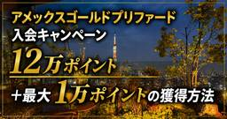

Happy Mi Life （ハッピーマイライフ）
https://www.happy-mi-life.net
人生を楽しく過ごすために、ポジティブに生きて行きたい！マイルを貯めて、大好きなゴルフをして、ハワイに行って、やりたいことがいっぱい！ このブログでは、ポジティブに生きて行くために自分の趣味をはじめ『ハッピー』と思うことを色々アップしていきます。
フィード
JWマリオット・クアラルンプール宿泊記｜22階の客室・ラウンジ・Shook!の朝食
Happy Mi Life （ハッピーマイライフ）
2025年2月に夫婦で1泊。JWマリオット・クアラルンプールの22階クラブ・エグゼクティブ・ツイン、ラウンジのパスタ、Shook!の朝食を紹介。宿泊料金17,693円の実績と、2026年9月確認の客室タイプ一覧・利用条件をまとめました。
9時間前

マリオットバケーションクラブの説明会を解説｜コオリナ3泊無料宿泊を説明会参加のみでプレゼント！【2026年版】
Happy Mi Life （ハッピーマイライフ）
更新日：2026年9月19日 この記事ではマリオットバケーションクラブの説明会に参加するだけでハワイオアフ島にあるコオリナビーチクラブを3連泊無料体験する方法を紹介しています。 私は、2022年10月にマリオットバケーシ […]
14時間前
【宿泊記】ホテル・ストライプス・クアラルンプール｜エグゼクティブスタジオ・プール・夜景をレビュー
Happy Mi Life （ハッピーマイライフ）
2025年2月に1泊12,385円で宿泊したホテル・ストライプス・クアラルンプールをレビュー。45㎡のエグゼクティブスタジオ、会員向けハッピーアワー、KLタワーの夜景、インフィニティプールを実体験で紹介します。
15時間前
リッツカールトン・ワイキキ宿泊記｜26階スイートの客室・眺望とFHR特典
Happy Mi Life （ハッピーマイライフ）
2024年2月、夫婦でリッツカールトン・ワイキキに1泊。26階の2ベッドルームスイート、海が見える寝室とバスルーム、夜景・花火、Quioraで使った100米ドルクレジットとFHRの16時チェックアウトを紹介します。
5日前

【2026年9月最新】アメックスゴールドプリファード入会キャンペーン｜12万ポイント＋最大1万ポイントの獲得方法
Happy Mi Life （ハッピーマイライフ）
最新更新日：2026年9月13日 アメックスゴールドプリファードでは、入会後のカード利用で最大12万ポイントを獲得できるキャンペーンを実施しています。 このキャンペーンの魅力は、100万円の利用条件を6か月かけて達成でき […]
6日前
【バリ島観光モデルコース】ヌサドゥア3泊で巡る絶景・寺院・ビーチ全ルート
Happy Mi Life （ハッピーマイライフ）
ヌサドゥア3泊で、ホテル滞在とバリ島観光をバランスよく組むモデルコース。12時間チャーターでキンタマーニ、テガララン、滝、ジンバランを巡り、帰国日はウルワツ観光から空港へ向かう日程を紹介します。
7日前

【カウアイ島観光モデルコース】1日レンタカーで巡った絶景スポット全ルート
Happy Mi Life （ハッピーマイライフ）
カウアイ島を1日レンタカーで観光。リフエ発着でワイメアキャニオン、ナ・パリ・コーストを望む展望台、ポイプビーチを巡った実走ルートと見どころ、料金、運転時の注意点を紹介します。
13日前
【カウアイ島】マリオット・カウアイ・ビーチ・クラブ宿泊記｜客室・プール・食事を写真で紹介
Happy Mi Life （ハッピーマイライフ）
カウアイ島のマリオット・カウアイ・ビーチ・クラブにMVCで3泊。オーシャンビュー客室、大型プール、カラパキビーチ、徒歩圏グルメ、予約前の注意点を実体験と写真で紹介します。
14日前
マリオット・バリ・ヌサドゥア・ガーデンズ宿泊記｜客室・プール・ビーチを紹介
Happy Mi Life （ハッピーマイライフ）
マリオット・バリ・ヌサドゥア・ガーデンズは、バリ島のヌサドゥアにあるマリオット・バケーション・クラブ（MVC）のリゾートです。 2024年5月、妻と2人でMVCポイントを使い、59㎡の1ベッドルームアパートメントとスタジ […]
14日前
ウェスティン リゾート グアム宿泊記｜クラブラウンジ・客室・チタン特典を写真で紹介【2026年】
Happy Mi Life （ハッピーマイライフ）
ウェスティン リゾート グアムに2名で3泊した宿泊記。51㎡のオーシャンフロント角部屋、クラブラウンジ、TASTEの朝食、プール・ビーチ、チタンエリート特典を写真付きで紹介します。
17日前